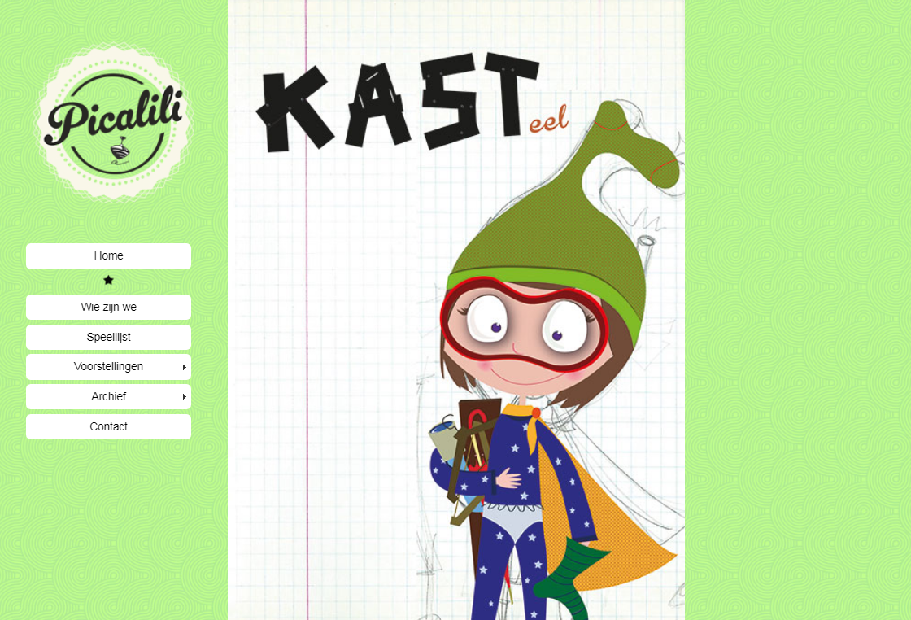
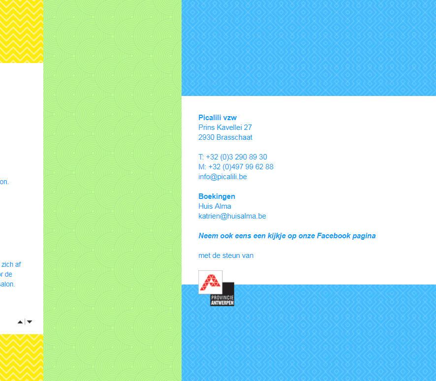
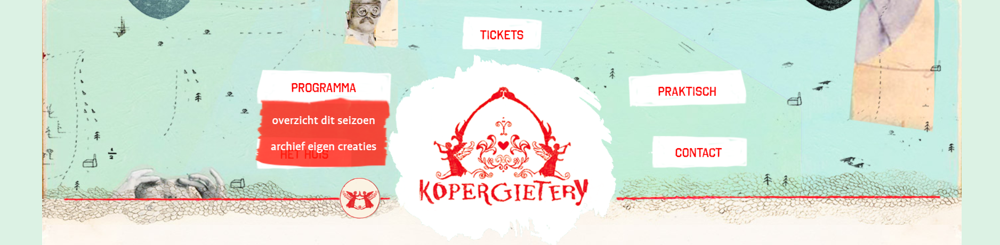
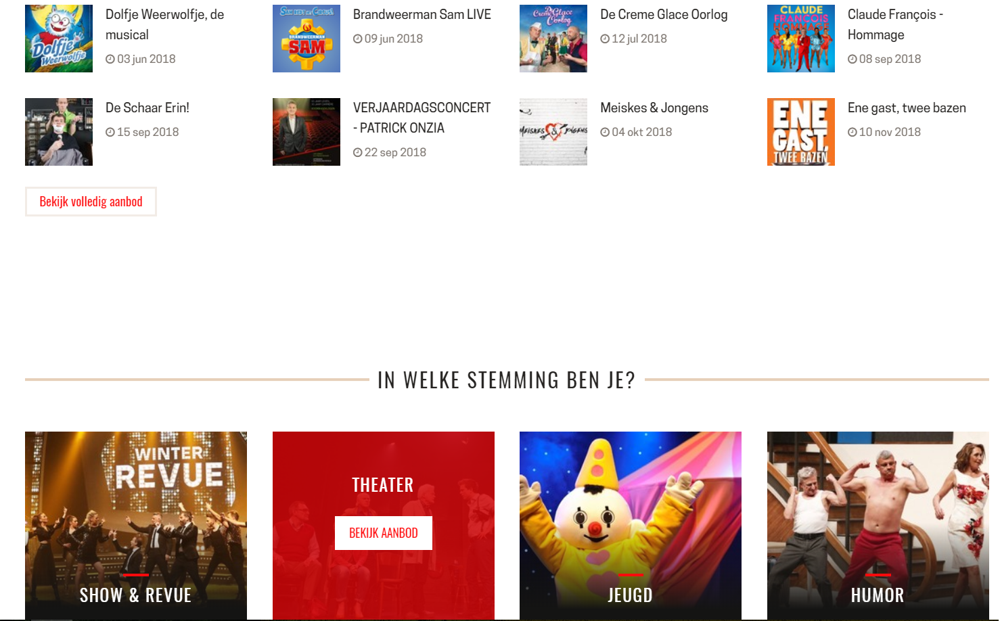
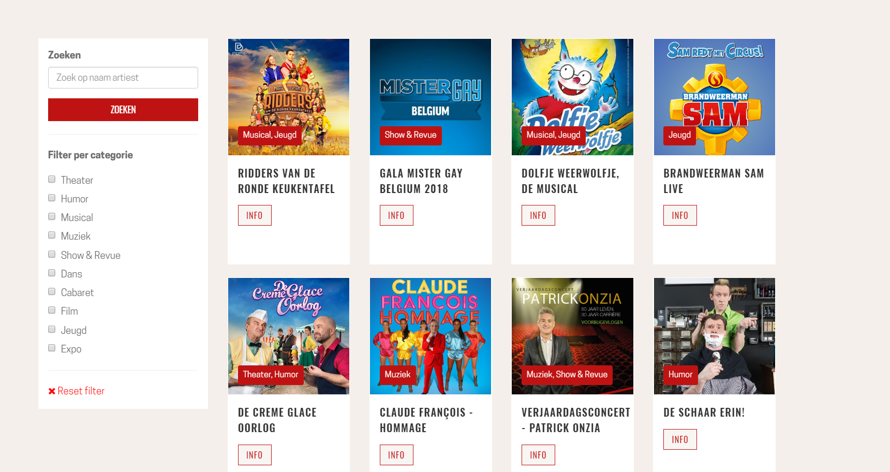
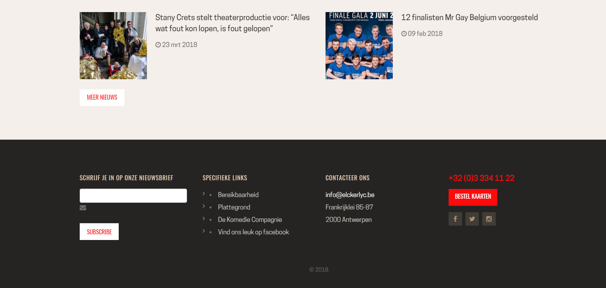

+ Duidelijke navigatie
+ De speellijst is overzichtelijk als kalender en de pijltjes waarmee automatisch door de lijst gescrold wordt is leuk en duidelijk.
- Onduidelijk om een voorstelling te boeken, gebeurt via een andere website of via e-mail.
- Informatie van datum en uur is nergens terug te vinden.
 + Navigatie is duidelijk, alle nodige informatie is meteen te zien
+ Bij de voorstellingen is er is een filter voor de periode (datum) en leeftijd, dat is heel handig in mijn ogen.
+ Reservatieplatform is duidelijk, men hoeft niet vooraf te betalen, maar het kan wel, de buttons die doorverwijzen om tickets te kopen zijn vallen meteen op. Ook datum en uur en om welke voorstelling het gaat zijn ernaast aanwezig.
- Navigatie kan soms misschien lastig zijn aangezien er overlappingen zijn met het uitklapmenu
+ Opkomende events staan samen op de home pagina.
+ Er is een kalender voorzien.
+ Ze zorgen voor beschrijvingen indien me wil overnachten in de buurt, op restaurant gaan, een zaalplan, ...
+ In de footer is nogmaals het belangrijkste aanwezig, zoals mogelijkheid tot inschrijven voor de nieuwsbrief, contact informatie en een opvallende button "bestel kaarten"
- De homepage ziet er een beetje chaotisch en niet professioneel uit.
 